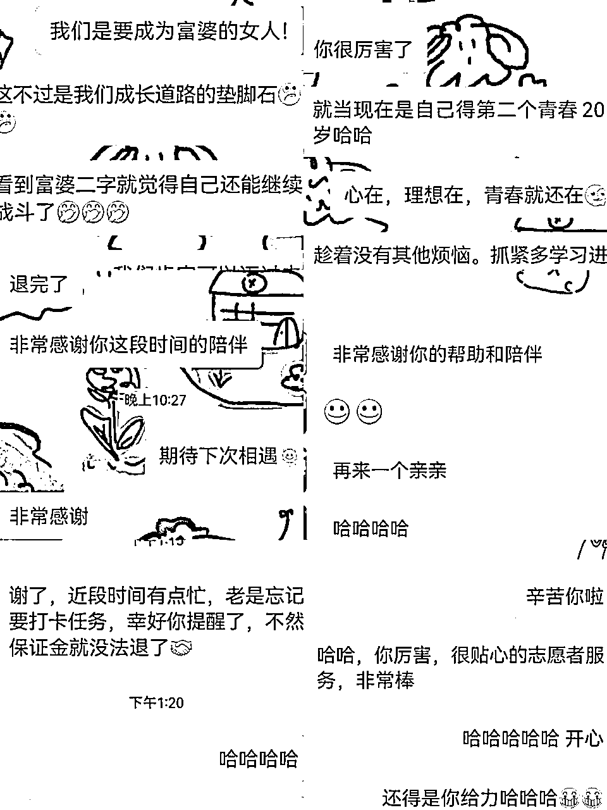

来源：https://p0729719d8b.feishu.cn/docx/S8kxdB6MgoKHsDxJ4uscTXMKnId
大家好，我是扑灭长空，现在叫秋秋桂，你可以叫我秋秋，一名03年出生的医学生。今年四月，我作为一位新人加入了生财这个大家庭。6月份有幸报名参加了【视频号带货】第8期的首次长线航海的志愿者，收获满满~~~
秋秋桂志愿者的邀请：
强烈安利每一位朋友，来当志愿者！
零成本体验运营之道，掌握运营的底层逻辑与全流程，开启你的运营之旅
学会社群运营的核心技能，让社群活跃、粘性增强、信任提升，成为社群运营达人
交付的最终归宿是私域，通过在实践中的锻炼，逐渐提升私域运营能力
培养责任感和主人翁意识，将通用的底层逻辑应用到工作中，成为职场佼佼者
建立明确的目标感，习得复盘技巧，同步提升执行力与思维习惯
通过长期坚持高维度的思考与规划，拓宽你的视野与格局。
在生财生态圈中崭露头角，获得认可，享受项目与合作的优先选择权，开启事业新篇章。
解锁更多工作与合作机会，让你的运营才华得到更广泛的认可与青睐。
除了这些外，额外收获：
你还可以获得许多夸夸＋深入连接的船员朋友~~~
在夸夸的氛围中，得到积极的反馈和支持，共同成长；
结识一群志同道合的船员朋友，与他们建立深厚的联系
话不多说，先查阅我的志愿者好评。

这是我第一次参加航海，首先就选择了当志愿者。
初识志愿者：
一开始，我对志愿者的概念有些肤浅的认识。心想：“志愿者？白嫖我劳动力吧？难道是要免费贡献我的劳动力？”这让我想起了大学时期那些看似平淡无奇的社会实践活动。
但是，我完全错了！
完全不是这样！成为志愿者！真的可以学到很多宝贵的东西！（超大声）
在深入阅读往期优秀志愿者的帖子后，我被深深的吸引，动了当志愿者的念头。开始认真考虑成为志愿者的可能性，参加辛亥老师的一次聚会后，我更加坚定了当志愿者的决定是正确的。
招募通知的犹豫：
当招募通知出来后，我犹豫了很多天。在那场线上聚会，辛亥老师的话给了我启发：”强烈安利去当志愿者，最好是在参与一次航海之后。“
新人的疑惑：
作为从没参与航海的新人，我下意识的提问：没有航海经验，没参加过航海就去了也行吗？
答案是肯定的！
我得到了一个肯定的答复，这让我信心倍增，确信我的选择是正确的。
如果你也想当志愿者，但望而却步的话，这篇内容希望对你有用。
加入生财，我的初衷：
作为一名03的搞钱小白，在生财的世界里，我发现自己像一张白纸，对于赚钱的多样途径知之甚少。可以说在加入生财我的赚钱活动，就是打工。
只有打工，我才能赚到钱，对其他赚钱的能力并不擅长，对于许多专业术语和概念都感到陌生。甚至在不久之前，我对视频号这样的平台也一无所知。
我为什么敢来报名当志愿者？因为我相信，我可以用我的真心来对待每一位船员。
志愿者不需要耀眼的成绩
我还记得一位船员和我说：你有做出什么耀眼的成绩吗？
她说:她也打算来当志愿者，但没做出什么成绩，觉得做出成绩才能更好地服务大家。
看到这段文字的时候，我下意识想起来往期优秀志愿者的复盘，
他们说：真心，才是最要紧的，要用一颗心来真诚的对待和服务每一位船员。
很开心我能了解到这些，并且在航海途中认识每一位船员。在激励他们前行的时候，也在激励我继续努力。
更幸运的是我遇到了马可乐领队，我只用按着可乐姐的领导来，就能做好所有的事情。
初期建立信任
体现真心的第一道关卡，是加上好友的初期沟通。
这是建立初期信任最重要的一步，我们能从中了解到船员的特长是什么？提醒交作业的时间?
其中，我觉得最关键的因素是，进行和船员的初步破冰，建立信任，方便船员后期有问题来找你沟通，也可以传递出：
有事来聊，我特别好沟通的！
对于后期的催作业打卡也很有作用哦，每一步都是埋下的种子，在后期都有作用的。
注重船员体感
沟通的时候，不要一连串的进行问号轰炸，减轻任务的难度，一步一步来，可以将两三个合并成一小段来询问，船员的体感会好很多。
当然，会有很多船员比较忙碌，没时间一个一个回。这时候，就可以把问题汇总到一块
参考话术为：看圈友这边比较忙碌哈，我给问题汇总到了这里，记得回答哦~
可以过几个小时，提醒一下。能回答的尽量都收集好，备注到志愿者后台或者微信
在提问中，引导船员想自己优秀、积极的一面，给出咱们得夸夸，让船员有信心，给出：肯定上岸 等积极暗示。
主打一个全程陪跑，给予充分的情绪价值。
建立知识库
在航海的准备期，我们可以多去了解航海有关的知识，观看往期的航海手册、高手领航、直播内容、精华帖等内容。对航海内容进行初步的预习。
在预习的途中，适当建立自己的资料库，不需要多么多么的正式，能随取随用就很好
真的遇到不会的问题，也不用慌张，提问走起来。
1.航海的业务问题，引导船员在交流群#举手 来进行问题
2.打卡的疑问等志愿者要解决的问题，志愿者交流群提问
来当志愿者都是很热心的小伙伴，会耐心回答提问的，大胆提问，不用害怕！
这是小霸王老师，在直播中反复强调的一点。
确定任务是否能完成
对于领队布置的任务，看到一定要回复一下，让自己的领队确定，这个作业你是收到可以完成的，哪怕是拍一拍。
完成不了也不用担心，每个人都会遇到点特别情况，一定要及时告知哦，让工作仍然可以顺利进行，对自己船员的每一天负责，及时沟通。
有效率的沟通，珍惜自己的时间
最让我印象深刻的一句话是领队说：你们的时间也是宝贵的。
呜呜呜当志愿者也有被好好尊重到了，开心。补充一点，船员的问题很多是会重复的，为了减少查阅聊天记录的时间，可以将相同的问题汇总到一个文档或者备忘录里，随取随用。
既能保证船员能高效的获得优质信息，也能节省自己的时间，避免做重复的工作。另外，一定要保存好航行图，方便在航海的中期、末期来进行提醒，特别是在倒数十天的时候，让船员意识到需要抓紧打卡，完成作业。
有时候领队会比较忙碌，没办法及时回应信息。所以建议，提问尽量放在志愿者小群，让效率最大化，方便其他志愿者进行了解。
气氛组的工作
除了需要下达到船员的传递任务外，我们也要做好气氛组的工作！主要是在教练或嘉宾进行分享的时候，在线最好去支持一下，热闹一下群中的气氛
在群中积极响应老师们的呼声，嗨起来！表情包走起来！哈哈哈
需要让船员们意识到，这是一次重要的活动，自己该听一听。也让分享的人，更有动力，有热情诉说更多业务知识。
有的圈友会比较内向，不愿意和志愿者多沟通，会觉得尴尬。咱这时候也不用担心，毕竟还有日志。
推荐好事
志愿者的工作是需要每天来观看日志的，将日志中的好事进行推送，让更多的船员看见并相信。取得结果，不是遥遥无期。
一点点的正反馈，都值得分享。新手在做项目的时候，是最需要信心的，不让自己被情绪打败。
我们可以通过日志了解到船员最近的情况怎么样，卡点在哪里，需要的资源有哪些？
在下方进行评价、点赞，让船员知道自己是在被陪伴的，有问题是可以一起解决的。
通过日志建立联系
最绝杀的点在于，发现了船员的问题，并提供了解决的方案。
例如，船员卡在了直播的话术问题上，我们就可以去领队提供的飞书文档翻一翻，有没有相应的资料。
当个贴心小棉袄的角色哈哈哈
这是我和一个船员建立了更深链接的小技巧。
查看日志，是一件很有意思的事情。我们能就日志的一个点，来找船员探讨，发起会话。
在航海中，除了每天批改日志外，在周三和周五我们需要挑出可以推荐的日志，让领队批改，这时候咱们就可以悄悄卷一下哈哈哈。
推荐日志的小心机
在提交日志的时候，总结一些成员遇到的问题，列出个1、2、3 。你想想，别人都是普通的提交，这时候你来小总结，领队会不对你默默加分吗？哈哈哈
当然，领队也会分享志愿者做的优秀的地方，来让大家学习。这时候，及时改进自己的方法，来进行学习，也不失为一个好方法。
其实我纠结了一段时间，到底要不要写这篇帖子，会觉得很小白没有什么用。
恍惚一瞬间，发现这不就是当志愿者初期的心态？！想做，但害怕、担心，从而不敢去做。
直到领队来询问我：你的帖子在哪里？！ 果然，ddl才是第一生产力。
话都说出口了！怎么能不做！
想到了一位朋友的话：除非你觉得对你今后发展一点帮助都没有，还浪费时间。不然如果自己有想法，只是害怕的话，还是先练一下，迈出第一步。
所以为什么不写复盘呢？
毫无疑问，复盘，是对志愿者工作的总结，对自己的成长内容的沉淀
哪怕写出来的帖子只有一句话、一个点有用，都是有价值的。
在此，我也强烈呼吁每一个人来做复盘，不要觉得自己很平凡，自己的经验很浅层。我们写下的每一个点，可能都会在无形中帮助到别人，更难以想象，我们的文字会感染到谁，会被谁看见。
复盘是成长的一步步脚印，或许很多年后，我会为我的每一步勇敢感到庆幸。若放眼到十年后，2024的文字肯定会让我热泪盈眶的。
十年后的阅读，是与24年小小的自己对话，光想想，就很想哭。
所以为什么不写复盘呢？×2
做难而正确的事情，当我们能面对内心真正需要去做的事情，后达成。至此，艺术已成。
很幸运能遇到可乐领队，感谢可乐姐对这篇帖子的把控、润色。
可以说，可乐姐影响到了我很多很多，大家要是当志愿者，可以和领队多多沟通呀~
积极主动，才会有故事哦~
感谢您能看到这里！祝您顺风顺水顺财神❤️🔥哈哈哈